Week 4 Exploratory Data Analysis
This unit spans Mon, Jan 27, 2020 through Sat, Feb 01, 2020.
At 11:59 PM on Sat, Feb 01, 2020 the following items are due:
- Communicating with the Data in the Tidyverse or Introduction to Data Science in Python
Now that we’ve learnt SQL and communication with RDBMS, we will cover how we extract data from SQL into R environment. We will learn some fundamental building blocks of R in the classroom.
Besides it is time to introduce some packages as well which will make our life easier when manipulating and exploring data. We’ll also use external packages to visually explore our data (i.e., create simple visualizations).
4.1 Media
- Reading: For Big-Data Scientists, ‘Janitor Work’ Is Key Hurdle to Insights
- Reading: Markdown
Reading: What is the tidyverse?, by Joseph Rickert
Script: Script for EDA
We’ll continue our exploration of the tidyverse with a specific focus on preparing reports containing data and visualizations for others. dplyr and ggplot2. In the notes, I’ll show you how to use the forcats package fct_reorder to change levels in graphs. In the videos, I’ll do the same using dplyr’s mutate function instead. There are often lots of ways to do the same thing in R.
4.2 Media
- Reading: What makes a chart boring?, Stephen Few
- Reading: Misleading graph, Wikipedia
- Video: dplyr joins
- Video: ggplot2 geoms
4.3 joining data
Before we jump into communicating data, I want to cover a technique that is often used in analytics – joining data. We’ll use the babynames database to illustrate. I am a male born in 1967. You probably listened to people from my generation start out stories with “back in my day,” and usually expound on how much more difficult some aspect of life was. I’ll continue the tradition…
Back in my day, people in the US weren’t as creative in naming their children. Apparently, they picked mostly New Testament, Christian names because that is what most other people were named in this country and there was potentially more pressure to conform. My name is the third most popular baby name from 1967 and The top five names made up nearly 20% of all the male names that year.
## Selecting by prop## # A tibble: 5 x 5
## year sex name n prop
## <dbl> <chr> <chr> <int> <dbl>
## 1 1967 M Michael 82445 0.0463
## 2 1967 M David 66808 0.0375
## 3 1967 M James 61699 0.0347
## 4 1967 M John 61623 0.0346
## 5 1967 M Robert 56380 0.0317top_n also sends a message stating which variable it is using to determine the top n observations.
Compare that to 2013, which is the most recent year from the babynames package. We see an influx of Old Testament names like Noah and Jacob, non-religious names like “Mason” and shortened names like “Liam.” Even more important is that the top five names combined don’t even account for five percent of all males born in 2013, which is one-quarter of the cumulative proportion of the top five names from 1967. Just by looking at that statistic, we can pretty much tell that there is likely far less conformity in naming male children in 2013 vs. 1967.
## Selecting by prop## # A tibble: 5 x 5
## year sex name n prop
## <dbl> <chr> <chr> <int> <dbl>
## 1 2013 M Noah 18241 0.00904
## 2 2013 M Jacob 18148 0.00900
## 3 2013 M Liam 18131 0.00899
## 4 2013 M Mason 17688 0.00877
## 5 2013 M William 16633 0.00825Except for William, the top five names in 2013 were not at all popular in 1967.
## # A tibble: 20 x 5
## year sex name n prop
## <dbl> <chr> <chr> <int> <dbl>
## 1 1967 M Michael 82445 0.0463
## 2 1967 M David 66808 0.0375
## 3 1967 M James 61699 0.0347
## 4 1967 M John 61623 0.0346
## 5 1967 M Robert 56380 0.0317
## 6 1967 M William 37621 0.0211
## 7 1967 M Jacob 451 0.000253
## 8 1967 M Noah 156 0.0000876
## 9 1967 M Mason 87 0.0000489
## 10 1967 M Liam 60 0.0000337
## 11 2013 M Noah 18241 0.00904
## 12 2013 M Jacob 18148 0.00900
## 13 2013 M Liam 18131 0.00899
## 14 2013 M Mason 17688 0.00877
## 15 2013 M William 16633 0.00825
## 16 2013 M Michael 15491 0.00768
## 17 2013 M James 13552 0.00672
## 18 2013 M David 12348 0.00612
## 19 2013 M John 10704 0.00531
## 20 2013 M Robert 6708 0.00333You’ll notice I used the %in% clause to show the top five from each period’s popularity in 1967. Let’s assume I want to answer the following questions:
- what are the top five male names that appear in both 1967 and 2013? - to keep it simple I’ll use totals and not proportions
- what are the top five male names from 1967 that don’t appear in 2013?
- what are the top five male names from 2013 that don’t appear in 1967?
4.3.1 inner joins
To answer the question: what are the top five names that appear in both 1967 and 2013?; I’m going first to create a data frame that joins the two periods. I’ll take multiple steps to illustrate, but I can make this syntactically simpler. inner_join creates a new data frame that “joins” the two objects by preferably some unique field that exists in both data frames, in this case, name.
males_1967 <- babynames %>% filter(year == 1967, sex == "M")
males_2013 <- babynames %>% filter(year == 2013, sex == "M")
males_both <- males_1967 %>% inner_join(males_2013, by = "name")
head(males_both)## # A tibble: 6 x 9
## year.x sex.x name n.x prop.x year.y sex.y n.y prop.y
## <dbl> <chr> <chr> <int> <dbl> <dbl> <chr> <int> <dbl>
## 1 1967 M Michael 82445 0.0463 2013 M 15491 0.00768
## 2 1967 M David 66808 0.0375 2013 M 12348 0.00612
## 3 1967 M James 61699 0.0347 2013 M 13552 0.00672
## 4 1967 M John 61623 0.0346 2013 M 10704 0.00531
## 5 1967 M Robert 56380 0.0317 2013 M 6708 0.00333
## 6 1967 M William 37621 0.0211 2013 M 16633 0.00825You’ll notice that the “.x” represents 1967 data, and the “.y” represents 2013. I can add n.x and n.y to get a total, but I’m assuming things won’t change that much from 1967 due to the high concentration of names.
## Selecting by n## # A tibble: 5 x 2
## name n
## <chr> <int>
## 1 Michael 97936
## 2 David 79156
## 3 James 75251
## 4 John 72327
## 5 Robert 63088Yep…the addition of the 2013 names didn’t even budge the order. The next question is more interesting…
What are the top five male names from 1967 that don’t appear in 2013?
We can’t use our joined data to answer this because that data frame explicitly contains names that only occur in both periods. To accomplish this, we need to do an outer join.
4.3.2 outer joins
In dplyr, a left_join joins two tables using all the data from the “left” table and only matching data from the right table, so if I want to use all of the 1967 names, I make sure that table is syntactically to the left of left_join
## # A tibble: 6 x 9
## year.x sex.x name n.x prop.x year.y sex.y n.y prop.y
## <dbl> <chr> <chr> <int> <dbl> <dbl> <chr> <int> <dbl>
## 1 1967 M Young 5 0.00000281 2013 M 8 0.00000397
## 2 1967 M Zbigniew 5 0.00000281 NA <NA> NA NA
## 3 1967 M Zebedee 5 0.00000281 2013 M 10 0.00000496
## 4 1967 M Zeno 5 0.00000281 2013 M 14 0.00000694
## 5 1967 M Zenon 5 0.00000281 2013 M 12 0.00000595
## 6 1967 M Zev 5 0.00000281 2013 M 160 0.0000793Looking at the last few names alphabetically, we can the name Zbigniew was used in 1967 and not in 2013 (evident by the NA values in the "*.y" columns). So rewording the question in r-speak, what we are asking is:
Show me the five highest n.x values for names where n.y is NA.
## Selecting by n.x## # A tibble: 5 x 2
## name n.x
## <chr> <int>
## 1 Bart 534
## 2 Tod 303
## 3 Kraig 172
## 4 Lon 162
## 5 Kirt 155We have uncovered a reverse-Simpsons-effect. Nobody in 2013 named their son Bart!
To do the same for the 2013 data, we can either put the 2013 table to the left of the left_join, or the right of a right_join.
males_both_2013 <- males_1967 %>% right_join(males_2013, by = "name")
males_both_2013 %>% filter(is.na(n.x)) %>% select (name, n.y) %>% top_n(5)## Selecting by n.y## # A tibble: 5 x 2
## name n.y
## <chr> <int>
## 1 Jayden 14756
## 2 Aiden 13615
## 3 Jaxon 7549
## 4 Brayden 7438
## 5 Ayden 6069It looks like we can refer to 2013 as "the rise of the *dens." It also appears that maybe my rush to label 2013 as “less conformist” may be wrong.
We could have answered both of these questions doing a single full outer join as well.
males_both_full <- males_1967 %>% full_join(males_2013, by = "name")
males_both_full %>% filter(is.na(n.y)) %>% select (name, n.x) %>% top_n(5)## Selecting by n.x## # A tibble: 5 x 2
## name n.x
## <chr> <int>
## 1 Bart 534
## 2 Tod 303
## 3 Kraig 172
## 4 Lon 162
## 5 Kirt 155## Selecting by n.y## # A tibble: 5 x 2
## name n.y
## <chr> <int>
## 1 Jayden 14756
## 2 Aiden 13615
## 3 Jaxon 7549
## 4 Brayden 7438
## 5 Ayden 60694.4 Design Guidelines
Let’s look at one of the visual encodings described in Iliinsky’s table – size, area. He has it listed as “Good” for quantitative values. If we compare this to Few’s use of “points of varying size,” we can see that Few only recommends this for geospatial data, specifically to pinpoint specific locations for entire regions. Part of this difference is due to the two people using different classification systems for visual encodings. “Size, area” is an expansive concept and you might think that there is some overlap between that category and Few’s categories of “Horizontal and Vertical Bars/Boxes.” For horizontal and vertical bars, it is the length that allows us to make the comparison so the “size, area” category doesn’t really overlap here. Horizontal and vertical box plots do have a slight area component to them but, once again, most of the preattentive processing is accomplished by the length and the line markers on the box plots.
A common example of using size to encode quantitative information is the bubble chart (shown below).

The chart shows what agencies the top 100 public servants in British Columbia worked in 2012. Size represents the count of public servants at that particular agency. I don’t think Iliinsky would be particularly fond of this chart. Stephen Few expresses his displeasure with it in a blog post. There probably is a nuanced difference between Few and Iliinsky on the applicability of bubble charts to static graphs which further illustrates the point that the visual encoding guidelines provided by both authors are suggestions, not law.
For bar and column charts, you should only use points when the quantitative scale does not begin at zero. In general, you should have good reason not to have a zero start point as this can lead to a misleading graph. If we want to compare home sales for select Puget Sound counties, county is categorical (technically it is also geographic, but we aren’t mapping right now). We use the length of the bars to make comparisons. Kitsap county looks like it had about 2.4 times as many listings as Island county because the bar is roughly 2.4 times longer. 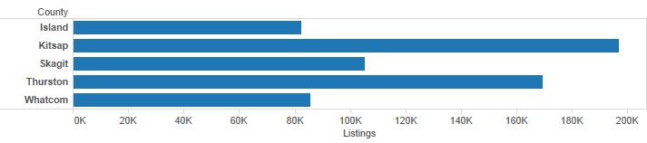
Let’s assume that for some reason, my quantitative scale doesn’t begin with zero (note: you should be extremely suspicious when you see this). The chart below becomes exceptionally misleading because now it appears as though Kitsap county has over ten times the listings of Island County. 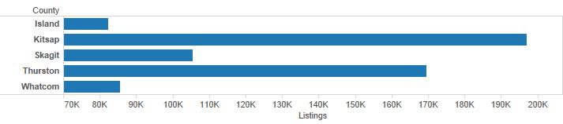
You should never let this happen. If for some reason you are forced into using a non-zero start point (this sometimes happens in journalism), then you should use something that doesn’t force our brain into making comparisons via length or area. A dot plot is shown below, but the first bar chart is still the best option in this case. 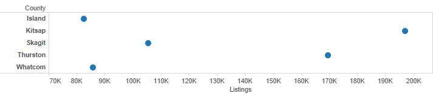
4.5 geom selection
We are going to look at Rolling Stone’s 500 greatest albums of all time (1955-2011) from cooldatasets.com. I’ve made a copy locally.
top_albums <- read.csv(url("http://jamessuleiman.com/teaching/datasets/Rolling_Stones_Top_500_Albums.csv"), stringsAsFactors = FALSE)
head(top_albums)## Number Year Album Artist Genre
## 1 1 1967 Sgt. Pepper's Lonely Hearts Club Band The Beatles Rock
## 2 2 1966 Pet Sounds The Beach Boys Rock
## 3 3 1966 Revolver The Beatles Rock
## 4 4 1965 Highway 61 Revisited Bob Dylan Rock
## 5 5 1965 Rubber Soul The Beatles Rock, Pop
## 6 6 1971 What's Going On Marvin Gaye Funk / Soul
## Subgenre
## 1 Rock & Roll, Psychedelic Rock
## 2 Pop Rock, Psychedelic Rock
## 3 Psychedelic Rock, Pop Rock
## 4 Folk Rock, Blues Rock
## 5 Pop Rock
## 6 SoulIt looks like this dataset is mostly categorical data with Year and Number being exceptions. Let’s first see how the genres are distributed. If I don’t map a variable to the y axis, geom_bar will take discrete categorical variables and create a bin for each one and then provide a count for each discrete category. This can be explicitly specified by setting the attribute stat = bin but it is the default behavior for geom_bar.
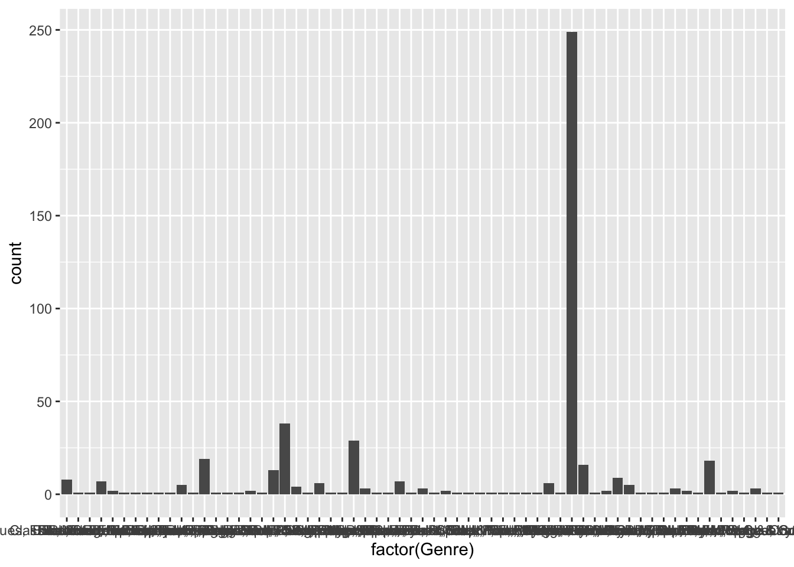
That is far more genres than I thought there would be. Let’s take a look at the top five genres. geom_bar’s default behavior is to place a count of data (i.e., stat = bin) on the y axis. In this case, we’ll use dplyr to pre-aggregate our data and we don’t want ggplot to attempt to count it. We switch to stat = identity to represent the value in the data frame rather than a count of occurrences.
top_5_genres <- top_albums %>% group_by(Genre) %>%
summarize(count = n()) %>% arrange(desc(count)) %>%
top_n(5)
ggplot(data = top_5_genres, aes(x = Genre, y = count)) +
geom_bar(stat = "identity") +
coord_flip()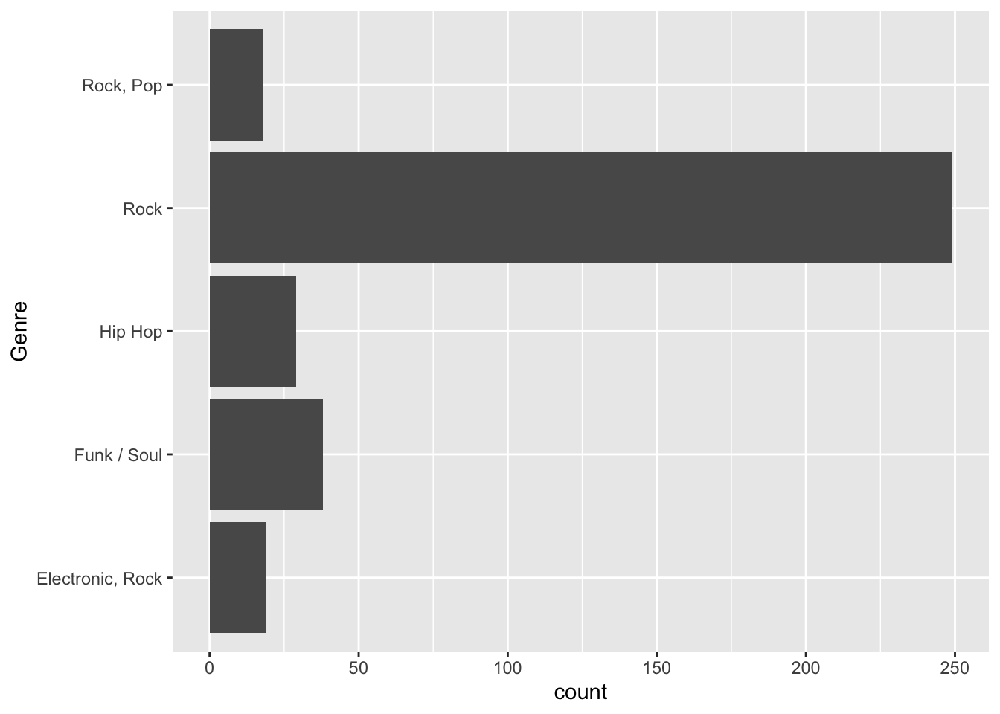
You might have noticed that even though I created top_5_genres with a descending sort, ggplot2 doesn’t arrange the categories in this manner. We’ll take a look at top_5_genres first.
## Classes 'tbl_df', 'tbl' and 'data.frame': 5 obs. of 2 variables:
## $ Genre: chr "Rock" "Funk / Soul" "Hip Hop" "Electronic, Rock" ...
## $ count: int 249 38 29 19 18Genre has not been defined as a factor and ggplot has no way to order it unless it is defined as a factor. We’ll use the fct_reorder function within mutate in the following manner:
fct_reorder(categorical_variable, sorted_quantitative_variable_to_order_by) or, in other words,
fct_reorder(Genre, count)
ggplot(data = top_5_genres, aes(x = fct_reorder(Genre, count, .desc = TRUE), y = count)) +
geom_bar(stat = "identity") +
xlab("Genre") +
coord_flip()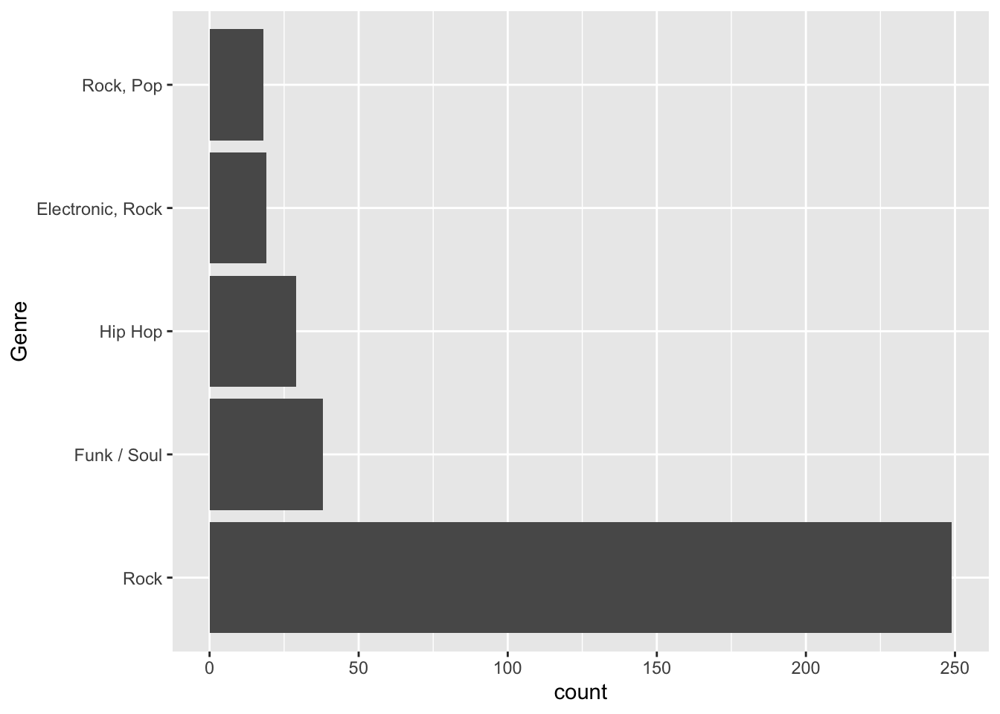
You might be inclined also to encode Genre by color. I’m not a big fan of this in that the color would serve no useful purpose. You would be better off using color as an attribute here and not an aesthetic.
ggplot(data = top_5_genres, aes(x = fct_reorder(Genre, count, .desc = TRUE), y = count)) +
geom_bar(stat = "identity", fill = "darkgreen") +
xlab("Genre") +
coord_flip()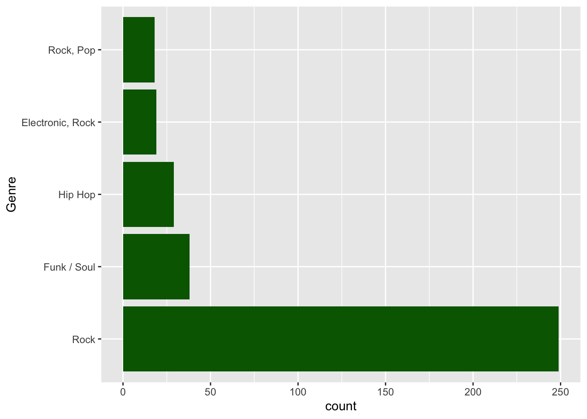
In the last couple of charts, we used geom_bar with stat = "identity" to help reinforce the difference between that and stat = "bin". ggplot2 also has the geom geom_col that was explicitly designed for bar charts using values (i.e., the default is identity instead of bin). We could recreate the last chart in a slightly more straightforward manner as shown below.
ggplot(data = top_5_genres, aes(x = fct_reorder(Genre, count, .desc = TRUE), y = count)) +
geom_col(fill = "darkgreen") +
xlab("Genre") +
coord_flip()Suppose we wanted to examine the count of top 500 records by year. Typically we show time series on the x-axis so we might do something like:
## `stat_bin()` using `bins = 30`. Pick better value with `binwidth`.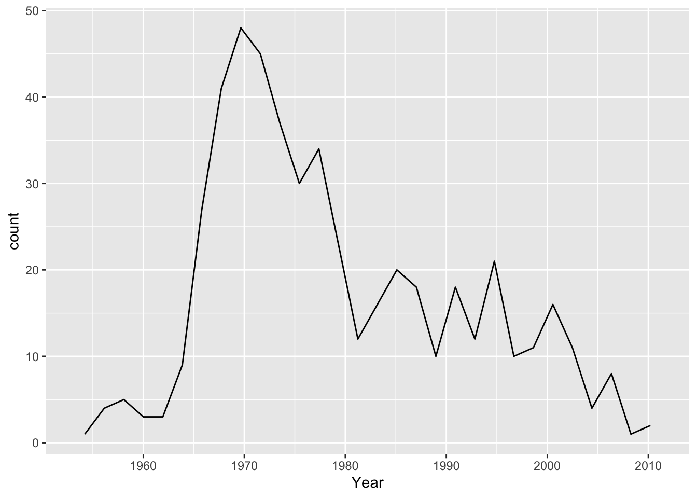
Video did indeed kill the radio star. I had to specify stat = bin in this case because geom_line uses stat = identity by default. Because I didn’t create an aesthetic for y, there is no identity value. You’ll also notice I get a warning informing me that it is creating 30 bins, which ends up misrepresenting the data because I likely have more than 30 discrete years given that the data runs from 1955 - 2011. The suggestion to Pick better value with 'binwidth' is a great one. Setting bindwidth = 1 gives me a bin, and the corresponding count, for each year. Having fewer bins would tend to smooth the data.
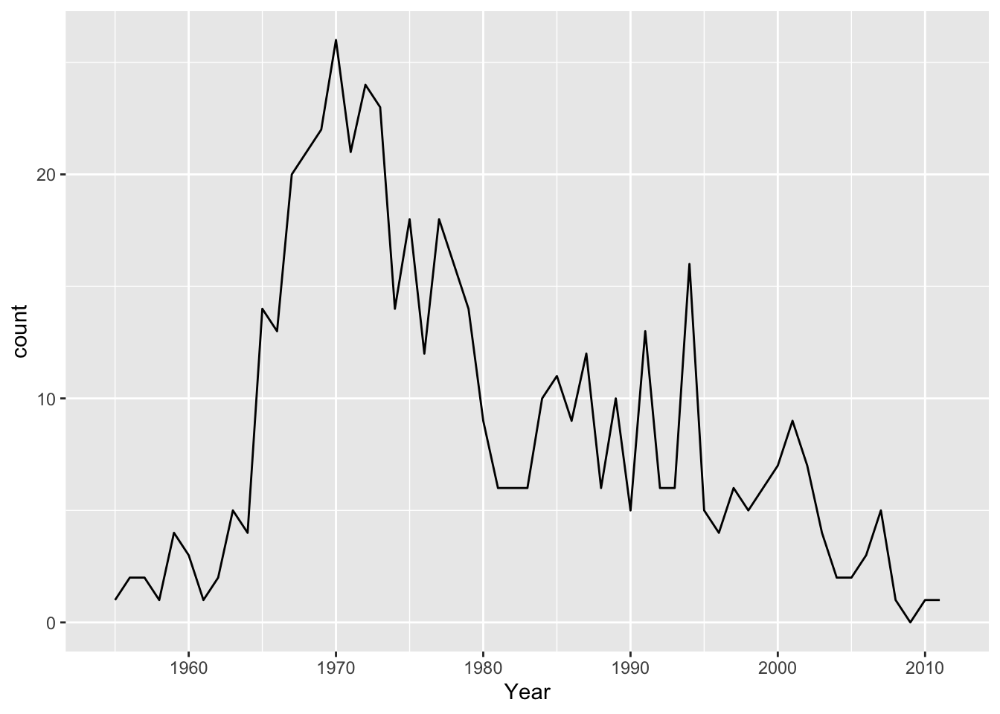
top_5_artists <- top_albums %>% group_by(Artist) %>%
summarize(count = n()) %>% top_n(5) %>%
arrange(desc(count)) %>%
ungroup %>% inner_join(top_albums)
ggplot(data = top_5_artists, aes(x = Year, y = fct_reorder(Artist, count), col = Genre)) +
geom_point(size=5, alpha = 0.3) +
geom_line(col = "darkgreen") +
ylab("Artist")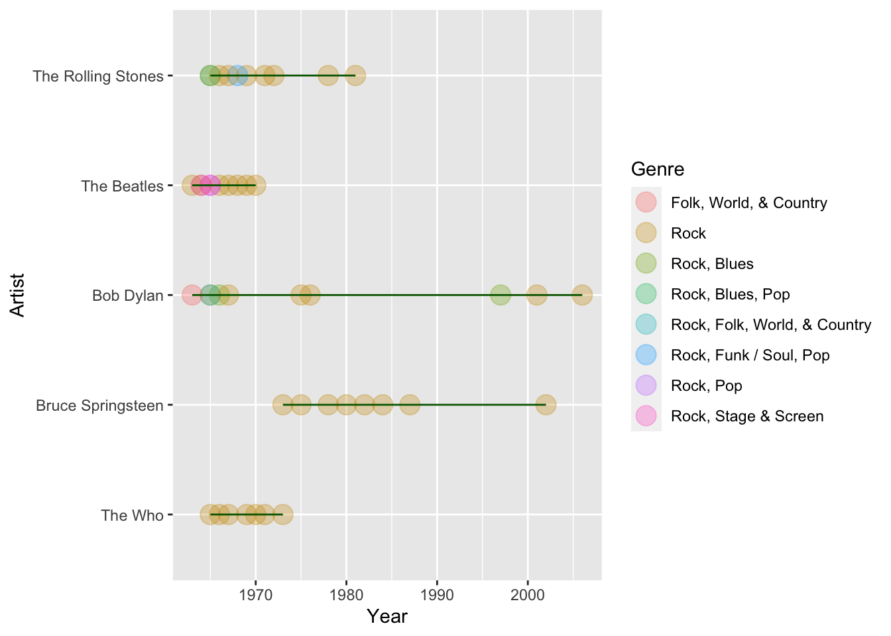
For our purposes, it looks like the genres don’t add much to the story, and the legend takes up quite a bit of space. I also want to add a title.
top_5_artists <- top_albums %>% group_by(Artist) %>%
summarize(count = n()) %>% top_n(5) %>%
arrange(desc(count)) %>%
ungroup %>% inner_join(top_albums)
ggplot(data = top_5_artists, aes(x = Year, y = fct_reorder(Artist, count))) +
geom_point(size=5, alpha = 0.3, col = "red") +
geom_line(col = "darkgreen") +
ggtitle("Most albums in the top 500 albums of all time (1955-2011)") +
ylab("Artist")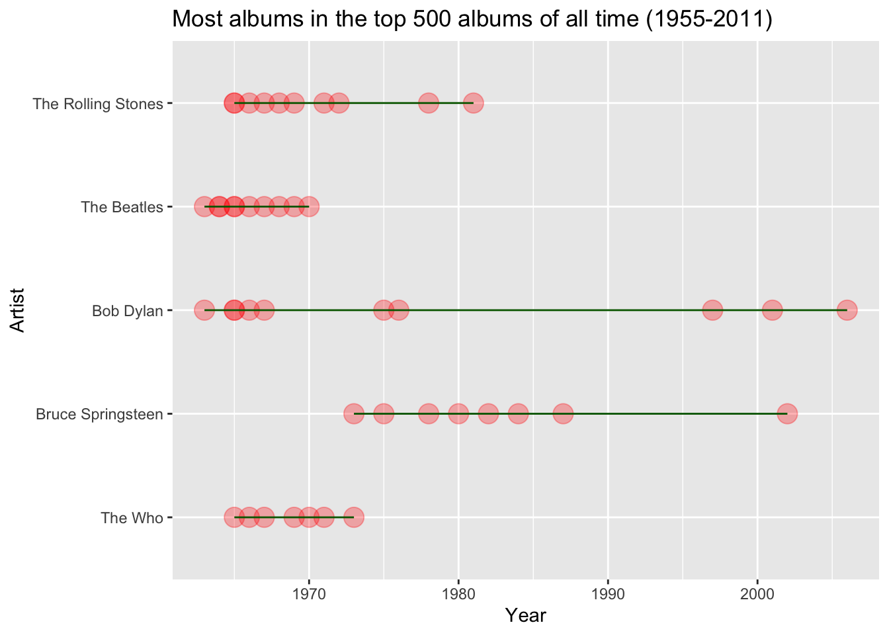
Feel free to review all of the geoms available in ggplot2. T
4.6 R Markdown
Before we can explain R Markdown, we need to explain Markdown. Markdown is a straightforward markup language for formatting text that was developed by John Gruber in 2004. For example, if I enclose a word or phrase with underscores like this: _hello, I am italic_ it will render in italics as shown below.
hello, I am italic
Some other common markdown formats are shown below:
**bold**`code`[hyperlinked text](url)# 1st level header## 2nd level header* bullet item 1* bullet item 2- …and others.
R Markdown uses an extended form of markdown known as Pandoc Markdown. If you want to see a list of the available Pandoc markdown codes, in RStudio, select Help --> Cheatsheets --> R Markdown Cheat Sheet and look at the left side of the second page.
R Markdown combines Pandoc Markdown formatting with the ability to display and run R code and show the output. R Markdown contains three essential components.
- an optional YAML header, enclosed with
___ - R code chunks, enclosed with
``` - Text formatting using Pandoc Markdown.
In RStudio, select File --> New File --> R Markdown... and accept the default options and click OK. Take a look at the default contents of the new R Markdown file. Click Knit on the top of your editing window and notice that RStudio wants to name the document with a .Rmd extension. Go ahead and save the file and look at the knitted or rendered output. Notice the code, the output, and the visualization. Let’s take a look at some of the elements of the actual R Markdown file.

The front-matter or YAML portion of the document is being used to specify the title of the document – in this case, “Untitled”, and the output format – in this case, HTML. Note that this portion is delimited by three hyphens ---.
4.6.1 code chunks
The code chunks are delimited by three back-ticks ``` and, in this case, start with {r} which designates the language being used (we’ll only be using R in this course). The code in these sections runs and, by default, is displayed in the document and rendered to look different than regular text visually (i.e., it is usually in a grey box using a monospaced font).
The code chunk options are settings that we use to control the behavior of the code chunk. More common options include
include = FALSEprevents code and results from appearing in the finished file. R Markdown still runs the code in the chunk, and other chunks can use the results.echo = FALSEprevents code, but not the results from appearing in the finished file. This is a useful way to embed figures.results = "hide"displays code and not output.message = FALSEprevents messages that are generated by code from appearing in the finished file.warning = FALSEprevents warnings that are generated by code from appearing in the finished.
The chunk name is optional, but it is good practice to name your chunks because it makes troubleshooting easier. If you want to look at some more chunk options, reference the R Markdown Reference Guide and see the knitr chunk options section (R Markdown uses the knitr library).
4.6.2 inline code
We can also write code inline in our report without a code chunk by enclosing the inline code using <backtick> r <code> <backtick>. For example, one plus four equals 5.
In the sentence above, I typed one plus four equals `r 1+4`.
4.7 YAML options
There are a variety of formatting options specific to HTML documents in r markdown that are controlled through YAML options. Many of the options start with the output: html_document in the front matter as shown below. I’ll use some of the more common options and explain.
---
title: "My document"
author: "Me"
output:
html_document:
toc: true
toc_float: true
number_sections: true
code_folding: hide
---In the example above:
toc: truespecifies a table of contents (clickable links pointing to level 1 headers)toc_float: truehas the table of contents floating to the left of the document (much like this course website).number_sections: truestart table of contents numbering at one and increasing by one.code_folding: hideallows you not to display code and have a clickable show code button if the reader wants to see the code.
There are many other options available, and you can read about them in the html_document_format publication by RStudio.
4.8 Embedding plots
To date, we haven’t really created visualizations in R. There are many packages that extend the base graphics available to us in R. We will be using the ggvis package for most of this semester – it will also be prominently used in the visualization course.
Embedding plots in R Markdown is pretty straightforward but there are a couple of things we need to consider:
- What format is my final report going to be output to (e.g., html, pdf, Word, ioslides, etc.).
- How are my reader’s going to consume my report (desktop/laptop, mobile device, printed)
For this unit, we’ll just be working with html because it is the most dynamic form of output. For figures, we might want to set the fig.width and fig.height. If we don’t, they will default to seven (measurements are in inches). In the image below, I have fig.width=6 and fig.height=8.
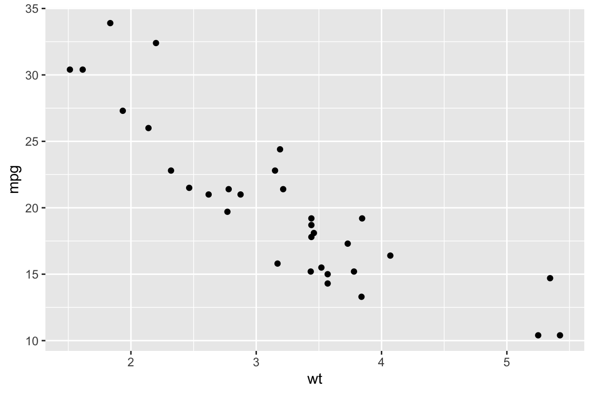
4.9 Prettier tables
There are some decent formatting options for tables in R Markdown. Below are three different versions of the same table:
Default
## wt mpg
## Mazda RX4 2.620 21.0
## Mazda RX4 Wag 2.875 21.0
## Datsun 710 2.320 22.8
## Hornet 4 Drive 3.215 21.4
## Hornet Sportabout 3.440 18.7
## Valiant 3.460 18.1
## Duster 360 3.570 14.3
## Merc 240D 3.190 24.4
## Merc 230 3.150 22.8
## Merc 280 3.440 19.2kable
| wt | mpg | |
|---|---|---|
| Mazda RX4 | 2.62 | 21.0 |
| Mazda RX4 Wag | 2.88 | 21.0 |
| Datsun 710 | 2.32 | 22.8 |
| Hornet 4 Drive | 3.21 | 21.4 |
| Hornet Sportabout | 3.44 | 18.7 |
| Valiant | 3.46 | 18.1 |
| Duster 360 | 3.57 | 14.3 |
| Merc 240D | 3.19 | 24.4 |
| Merc 230 | 3.15 | 22.8 |
| Merc 280 | 3.44 | 19.2 |
pander
| wt | mpg | |
|---|---|---|
| Mazda RX4 | 2.62 | 21 |
| Mazda RX4 Wag | 2.88 | 21 |
| Datsun 710 | 2.32 | 22.8 |
| Hornet 4 Drive | 3.21 | 21.4 |
| Hornet Sportabout | 3.44 | 18.7 |
| Valiant | 3.46 | 18.1 |
| Duster 360 | 3.57 | 14.3 |
| Merc 240D | 3.19 | 24.4 |
| Merc 230 | 3.15 | 22.8 |
| Merc 280 | 3.44 | 19.2 |
There are several other table formatting packages that we aren’t going to cover but to summarize:
- default tables aren’t too pretty
kableis part ofknitrand is a simple way to make prettier tablespanderhas more options than kable, but is more complex- there are a variety of other packages that might suit your specific need (e.g.,
xtable,htmltables, etc.) but for this classpanderandkableshould have you covered.
4.10 Knitting
At any time, you can knit your R Markdown file. In RStudio, you can use the Knit or KnitHTML button to specify if you want to knit to html, pdf, or a Microsoft Word document. What actually happens behind the scenes is that RStudio uses the rmarkdown package to render the output in your specified format.
The video will have more detailed use of R Markdown.
4.11 DataCamp Exercises
The DataCamp exercises are focused on creating visualizations for others. When we develop visualizations for ourselves, we are often creating them to explore data. When we build them for others, we are creating them to communicate.
4.12 Assignment 01
- Solution: A01